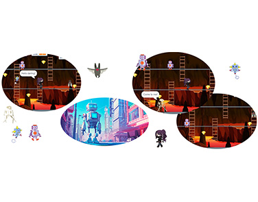
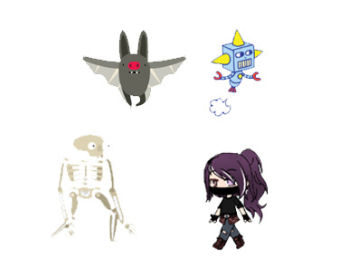
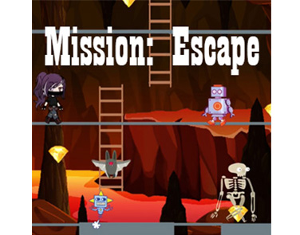

Follow the creation process behind Robo Runner — from the first gameplay ideas and character concepts to level design, enemy mechanics, and final game balancing.
read this
Learn how different enemy types were developed with unique movement patterns, attack styles, and increasing difficulty to make every level more intense and engaging.
read this
Explore the inspiration behind Robo Runner, the creative process of designing the robot hero, and how the game evolved from a simple idea into a complete platform adventure.
read this